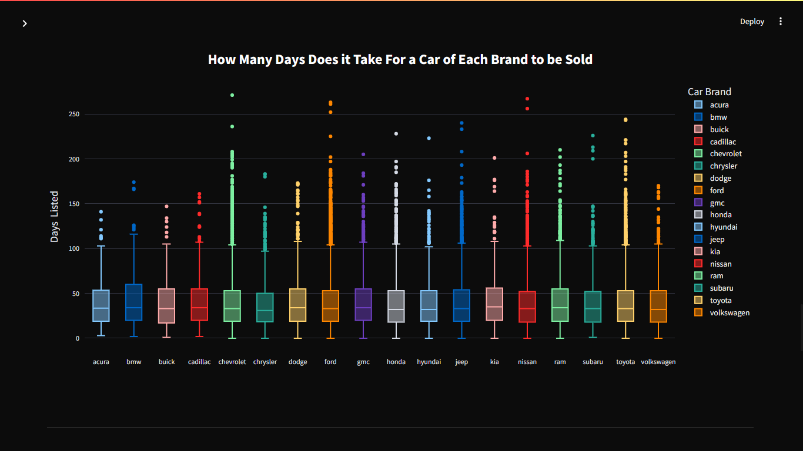

Aplicativo Web: Previsão de Preços (Machine Learning) e Análise de Dados Automotivos.
Aplicativo web interativo para análise e previsões de dados do mercado automotivo.
O Começo
O desenvolvimento do projeto iniciou-se com a coleta dos dados brutos fornecidos por uma plataforma de vendas de veículos. Esses dados continham diversas informações, como marca, modelo, ano, quilometragem, preço, cor e outras características. Antes de qualquer análise, foi necessário realizar um processo de limpeza e pré-processamento dos dados.
Exploração e Análise dos Dados (EDA)
Após a etapa de limpeza e pré-processamento, iniciei a Análise Exploratória de Dados (EDA) para compreender melhor o comportamento do conjunto de dados e identificar padrões relevantes. O primeiro desafio foi lidar com valores ausentes. Mais de 25 mil registros apresentavam campos vazios, sendo que cerca de 10 mil estavam na coluna "paint_color", preenchida com a categoria "unknown". Os demais valores ausentes, presentes em colunas como "model_year", "cylinders" e "odometer", foram tratados com base na moda por modelo, na condição do veículo, na quilometragem e no ano de fabricação, garantindo consistência nas informações.
Durante a análise, identifiquei casos específicos que poderiam distorcer os resultados, como a marca Mercedes-Benz, que tinha apenas 40 linhas de dados para dois modelos de carro (valores repetidos). Para manter a robustez estatística, essa marca foi removida. Também foram eliminados mais de 800 registros de veículos com preços inferiores a 100 dólares, considerados outliers irreais para o mercado automotivo.
Essa etapa foi fundamental para estruturar as variáveis que alimentariam o modelo de machine learning e os gráficos.
Análises Visuais
Com o conjunto de dados tratado, iniciei a construção de visualizações interativas para investigar padrões no mercado automotivo. Um dos principais gráficos foi a mediana de preços por marca, que oferece uma visão mais robusta do valor central de cada fabricante, reduzindo o impacto de valores extremos e fornecendo uma referência mais fiel do mercado. Essa análise permitiu identificar quais marcas se posicionam em faixas de preço mais altas e quais apresentam valores mais acessíveis.
Outro ponto explorado foi a distribuição das cores dos veículos. Ao mapear a frequência de cada cor, foi possível observar preferências do mercado e avaliar se determinadas tonalidades podem ter relação com liquidez de venda ou variações de preço. Esses insights visuais ajudam tanto compradores quanto vendedores a compreender melhor as tendências de consumo.
Entendendo e Tratando Outliers
Para tornar a análise mais compreensível a qualquer público, preparei uma explicação simples sobre o que são outliers, como identificá-los e qual o impacto que eles podem ter nas conclusões. Utilizei o exemplo de um boxplot, explicando seus elementos principais: mediana, quartis e outliers. Além disso, mostrei como esses outliers representam valores extremos que podem distorcer métricas como a média.
Um caso prático foi o tempo de venda de veículos Chevrolet, onde um registro indicava 271 dias para a venda, enquanto a mediana era de apenas 33 dias. Esse único valor elevava a média para 39,6 dias. Após a remoção dos outliers, a mediana caiu para 32 dias e a média para 36,6 dias, evidenciando que a média é muito mais sensível a valores extremos do que a mediana.
Expliquei também que a remoção foi criteriosa: apenas 3,1% dos dados foram excluídos, mas eles inflavam a média em quase 10%. Incluí um exemplo de código em Python mostrando como calcular a porcentagem de outliers por marca, utilizando o intervalo interquartil (IQR) como critério. Essa abordagem combinou clareza na explicação com aplicação prática, tornando o conceito acessível até mesmo para quem não tem formação em ciência de dados.
Testes Estatísticos
Para validar se as diferenças observadas nos gráficos eram estatisticamente significativas, utilizei testes como ANOVA e Tukey’s HSD. O ANOVA foi aplicado para verificar se havia diferenças relevantes entre as médias de preço de diferentes grupos, enquanto o teste de Tukey’s HSD ajudou a identificar quais pares de grupos apresentavam essas diferenças de forma mais precisa. Essa abordagem assegurou que as conclusões fossem baseadas em evidências numéricas e não apenas em percepções visuais.
Esses testes foram implementados com as bibliotecas Scipy e Statsmodels, e os resultados foram apresentados de forma visual, utilizando gráficos para destacar comparações significativas.
Modelo de Machine Learning
Com a análise estatística concluída e as variáveis mais relevantes definidas, desenvolvi um modelo de Machine Learning para prever preços de veículos. Inicialmente testei a Regressão Linear, mas o desempenho não foi satisfatório. Em seguida, optei pelo algoritmo Random Forest Regression, que apresentou melhor equilíbrio entre precisão e capacidade de generalização.
O modelo foi treinado com atributos como marca, ano de fabricação, quilometragem, tipo de combustível e cor do veículo. Para medir a performance, utilizei métricas de avaliação de regressão, garantindo que as previsões fossem consistentes com o comportamento real do mercado. O modelo atingiu mais de 85% de score no conjunto de validação e foi integrado à aplicação web, permitindo que o usuário insira as características de um veículo e obtenha uma estimativa de preço baseada no histórico de dados.
Resultado
Este projeto combinou o poder do machine learning com uma análise detalhada de dados e testes estatísticos para construir uma ferramenta completa de análise do mercado automotivo. A combinação de visualizações interativas, tratamento criterioso de dados e modelo preditivo oferece uma solução completa para análise e tomada de decisão.
Ver no GitHub ← Voltar para todos os projetos